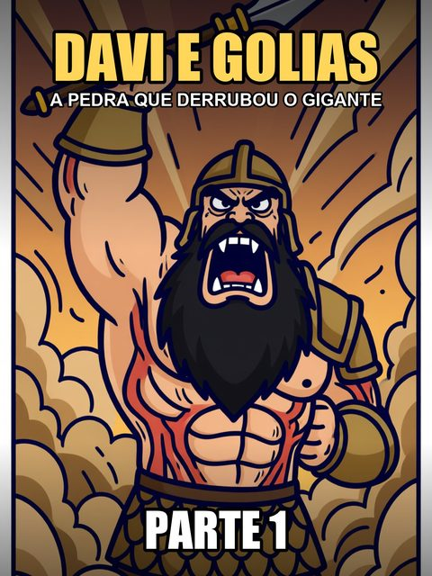
Davi e Golias
1 Samuel 17Um exército inteiro parado de medo, e o menino que ninguém levava a sério desce ao vale com cinco pedras.
16 histórias publicadas até agora, da mais recente para a mais antiga. Os episódios longos saem divididos em partes, na ordem, no perfil do TikTok.

Um exército inteiro parado de medo, e o menino que ninguém levava a sério desce ao vale com cinco pedras.

Ele comprou passagem para o lado oposto do mundo. O mar, o barco e o peixe discordaram.
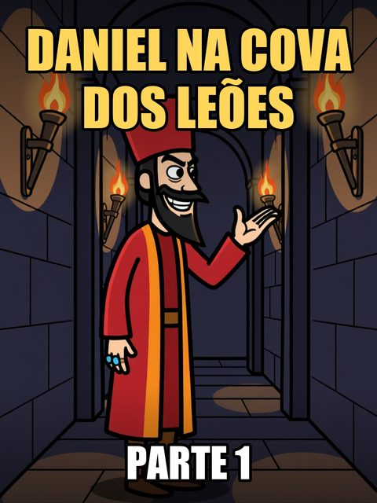
Uma lei feita sob medida para matar um homem que só fazia uma coisa: rezar de janela aberta.
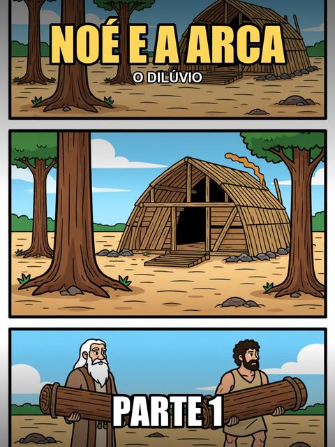
Cem anos construindo um barco longe do mar, sob risada da cidade inteira.
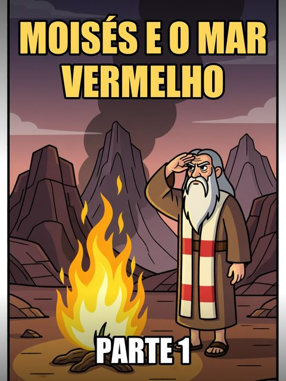
Com o exército atrás e a água na frente, o caminho se abriu no meio do mar.
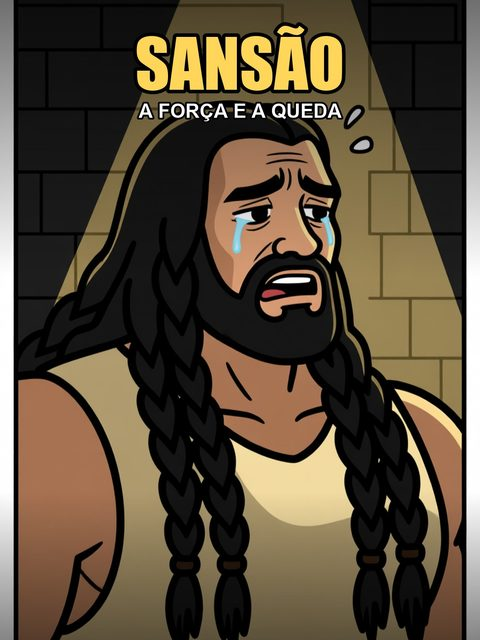
O homem mais forte da terra perdeu tudo por uma pergunta repetida quatro vezes.

Sete dias de volta, nenhum golpe, e a muralha mais grossa do mundo no chão.
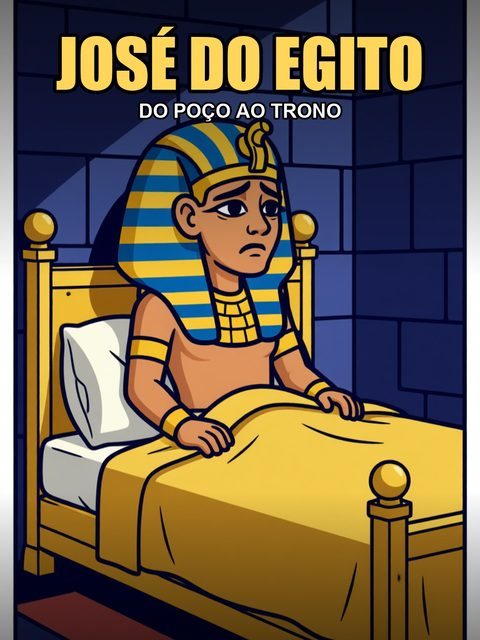
Vendido pelos irmãos, esquecido na prisão, e governando o país que o comprou.
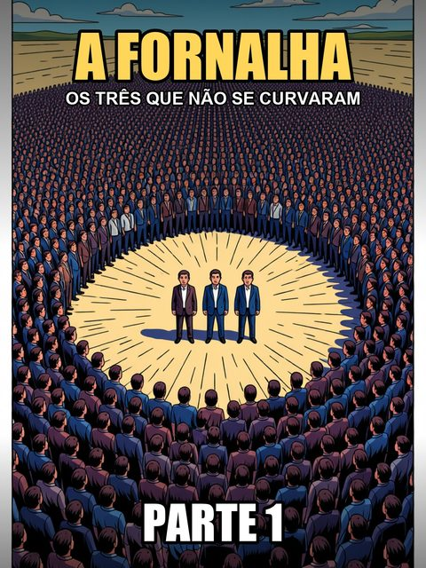
A estátua de ouro, a música, e três homens de pé quando o mundo inteiro se abaixou.
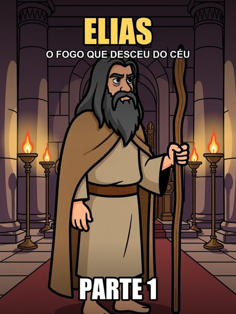
Um profeta sozinho contra quatrocentos e cinquenta, e um altar molhado de propósito.
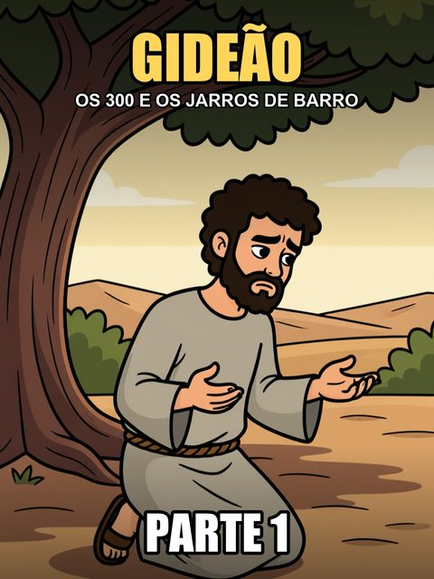
Deus mandou dispensar trinta e um mil soldados. Sobraram trezentos, com jarros e tochas.
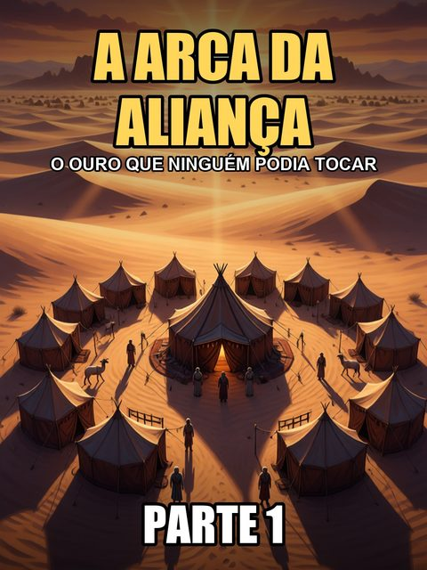
Tomada numa batalha, ela derrubou o ídolo do inimigo e voltou sozinha num carro de bois.
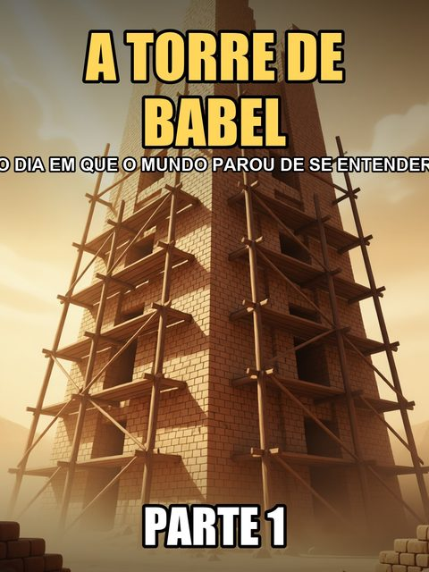
Uma cidade, um idioma, um tijolo novo que mudava tudo — e a manhã em que ninguém mais se entendeu.
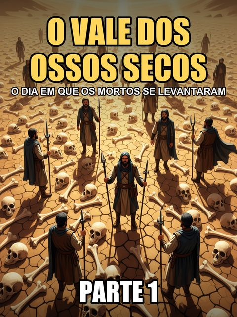
Um campo coberto de ossos ressecados, e a ordem de falar com eles.
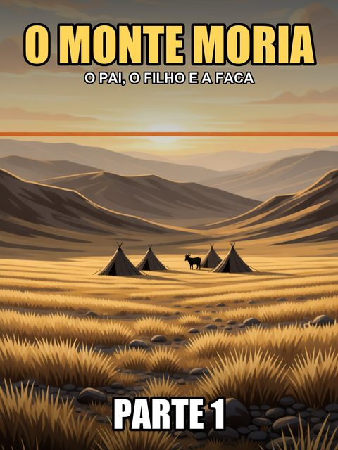
Três dias de caminhada carregando a lenha do próprio altar.
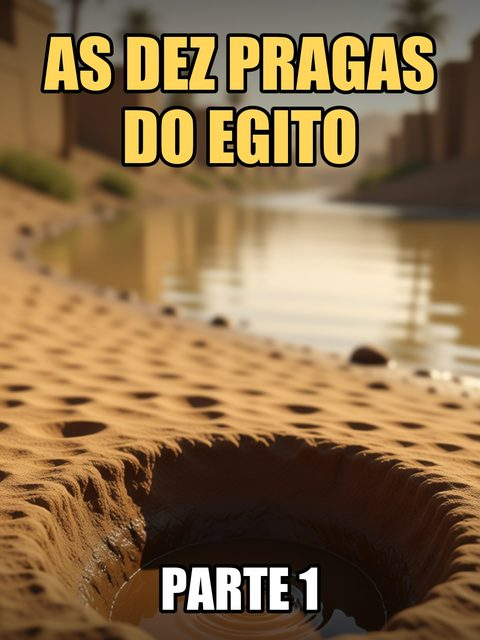
Nove vezes ele pôde ter dito sim. O rio, o granizo e a escuridão insistiram.
A Arca da Aliança — 1 Samuel 4-6
A Fornalha Ardente — Daniel 3
A Torre de Babel — Gênesis 11
As Dez Pragas do Egito — Êxodo 7-11
Daniel na Cova dos Leões — Daniel 6
Davi e Golias — 1 Samuel 17
Elias e o Fogo do Céu — 1 Reis 18
Gideão e os 300 — Juízes 6-7
Jericó: A Cidade que Caiu Sozinha — Josué 2 e 6
Jonas e o Grande Peixe — Livro de Jonas
José do Egito: Do Poço ao Trono — Gênesis 37-45
Moisés e o Mar Vermelho — Êxodo 12-14
Noé e a Arca — Gênesis 6-9
O Monte Moriá — Gênesis 22
O Vale dos Ossos Secos — Ezequiel 37
Sansão: A Força e a Queda — Juízes 13-16